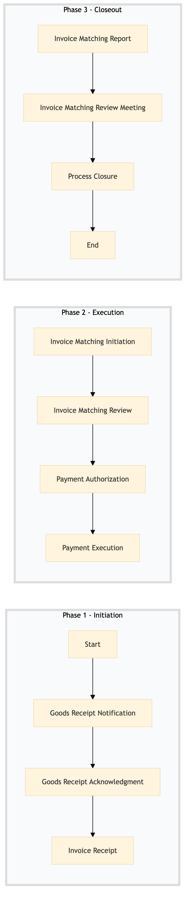

| Role | Steps |
|---|---|
| Procurement Officer | 1.1 1.2 |
| Accounts Payable Clerk | 1.3 1.4 2.3 3.1 3.3 |
| Accounts Payable Supervisor | 1.4 2.1 2.2 3.2 |
| Step | Name | Role | System | Input | Output | KPI | Dec? | Exc? | Pain Point / Risk |
|---|---|---|---|---|---|---|---|---|---|
| 1.1 | Goods Receipt Notification | Procurement Officer | Birchstreet Procurement | Purchase Order (PO) confirmation from supplier | Goods receipt notification in Birchstreet Procurement | Less than 1 hour | N | Y | Late delivery notifications affecting inventory management |
| 1.2 | Goods Receipt Acknowledgment | Procurement Officer | Oracle OPERA Cloud | Goods receipt notification | Acknowledged goods receipt in Oracle OPERA Cloud | Less than 30 minutes | N | Y | Incorrect inventory updates leading to stock discrepancies |
| 1.3 | Invoice Receipt | Accounts Payable Clerk | SAP S/4HANA | Invoice from supplier | Recorded invoice in SAP S/4HANA | Less than 2 hours | N | Y | Delayed invoice processing affecting cash flow |
| 1.4 | Invoice Matching Initiation | Accounts Payable Clerk | SAP S/4HANA | Acknowledged goods receipt, recorded invoice | Initiated matching process in SAP S/4HANA | Less than 1 hour | N | Y | Manual errors during matching causing payment delays |
| 2.1 | Invoice Matching Review | Accounts Payable Supervisor | SAP S/4HANA | Initiated matching process | Approved or rejected invoice match in SAP S/4HANA | Less than 2 hours | Y | N | No clear audit trail for manual adjustments |
| 2.2 | Payment Authorization | Accounts Payable Supervisor | SAP S/4HANA | Approved invoice match | Authorized payment in SAP S/4HANA | Less than 1 hour | N | Y | Overdue payments affecting supplier relationships |
| 2.3 | Payment Execution | Accounts Payable Clerk | SAP S/4HANA | Authorized payment | Executed payment to supplier | Less than 1 hour | N | Y | Payment errors leading to financial disputes |
| 3.1 | Invoice Matching Report | Accounts Payable Clerk | SAP S/4HANA | Completed payment execution | Generated invoice matching report in SAP S/4HANA | Less than 1 hour | N | Y | Lack of visibility into the entire process |
| 3.2 | Invoice Matching Review Meeting | Accounts Payable Supervisor, Procurement Officer | Microsoft Teams | Invoice matching report | Reviewed and discussed invoice matching issues in Microsoft Teams | Less than 1 hour | Y | N | No regular review meetings leading to unresolved discrepancies |
| 3.3 | Process Closure | Accounts Payable Clerk | SAP S/4HANA | Reviewed invoice matching issues | Closed the goods receipt and invoice matching process in SAP S/4HANA | Less than 30 minutes | N | Y | Incomplete closure affecting future processes |
This process ensures accurate goods receipt and invoice matching at a Marriott full-service hotel to maintain financial integrity and optimize procurement.